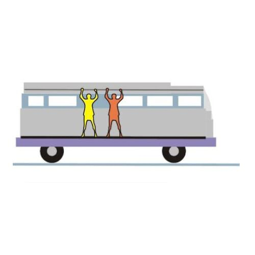

Cinemática
entenda tudo sobre esse tema!
Introdução à cinemática
A cinemática é um dos ramos da mecânica, a área da Física que estuda o movimento. A mecânica, por sua vez, tem como áreas principais a cinemática, a dinâmica e a estática. A cinemática concentra-se no estudo do movimento dos corpos sem levar em conta as causas do movimento. Seja a trajetória de pequenas partículas ou até mesmo as órbitas planetárias, todo movimento macroscópico pode ser descrito a partir de equações de movimento. Essas equações relacionam grandezas como posição, velocidade e aceleração com a passagem do tempo. Para entendê-las, entretanto, é necessário que conheçamos alguns conceitos simples, mas indispensáveis para entendermos o movimento dos corpos."
Cinemática
Essa área de estudos da Física permite que o movimento seja equacionado, dessa forma, é possível prever a posição, a velocidade ou quaisquer outros parâmetros do movimento de um móvel em instantes posteriores ao presente.
Vamos conhecer alguns dos conceitos que são fundamentais para o estudo da cinemática.
→ Referencial
Referencial é a posição em que o observador se encontra. Geralmente ele é escolhido como a origem de um plano cartesiano. É a partir do referencial que são determinadas as posições das coisas. Para uma pessoa parada na rua, por exemplo, um carro passa movendo-se a 60 km/h, entretanto, para o motorista do veículo, o carro está parado, uma vez que ambos estão se movendo na mesma velocidade.
→ Movimento
Movimento e repouso são conceitos relativos na cinemática. Um corpo pode estar em movimento em relação a um referencial, mas parado em relação a outro. Por isso, dizemos que movimento é a situação em que a posição de um corpo muda, no decorrer de certo intervalo de tempo, em relação a um referencial.
→ Trajetória
Trajetória é a sucessão das posições ocupadas por um móvel. Existem trajetórias retilíneas e curvilíneas ou até mesmo caóticas, para o caso do movimento de partículas, por exemplo. O formato da trajetória de um corpo depende do referencial de observação. Quando andamos pela areia da praia, por exemplo, as pegadas que deixamos são um registro das posições em que estivemos nos instantes anteriores, portanto podem ser compreendidas como uma trajetória.
→ Móvel
Na Física, móvel é todo e qualquer corpo que muda de posição com o decorrer do tempo.
→ Ponto material
Ponto material é a qualidade de qualquer móvel que pode ter suas dimensões desprezadas se comparadas com as distâncias percorridas. Um avião, por exemplo, pode ser considerado um ponto material em uma viagem de 2000 km, mas suas dimensões não podem ser desprezadas quando ele está manobrando no chão, onde percorre pequenas distâncias.
→ Espaço percorrido
Espaço percorrido é a medida do comprimento da trajetória descrita por um móvel; em outras palavras, diz respeito à distância que o móvel percorreu.
→ Deslocamento
Deslocamento, diferentemente de espaço percorrido, é uma grandeza vetorial, pois apresenta módulo, direção e sentido. O deslocamento é a diferença entre as posições final e inicial de um movimento. Em uma trajetória fechada, o deslocamento é nulo.

fonte: BrasilEscola
Que comece o desafio!